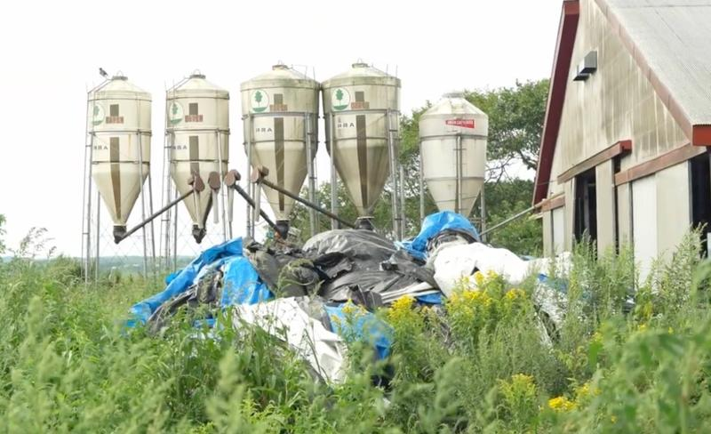
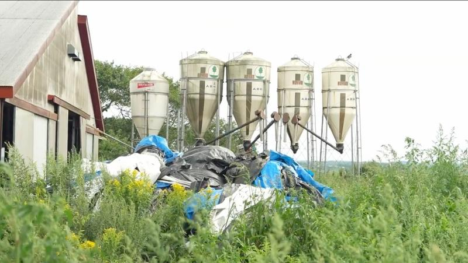
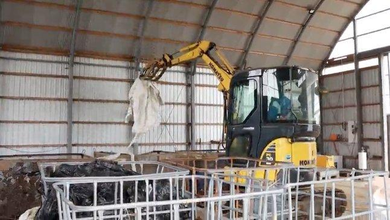
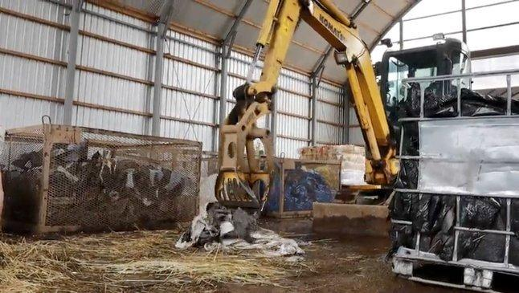
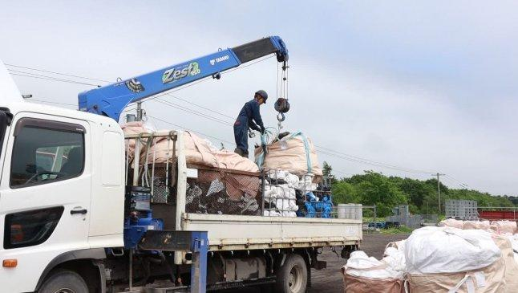
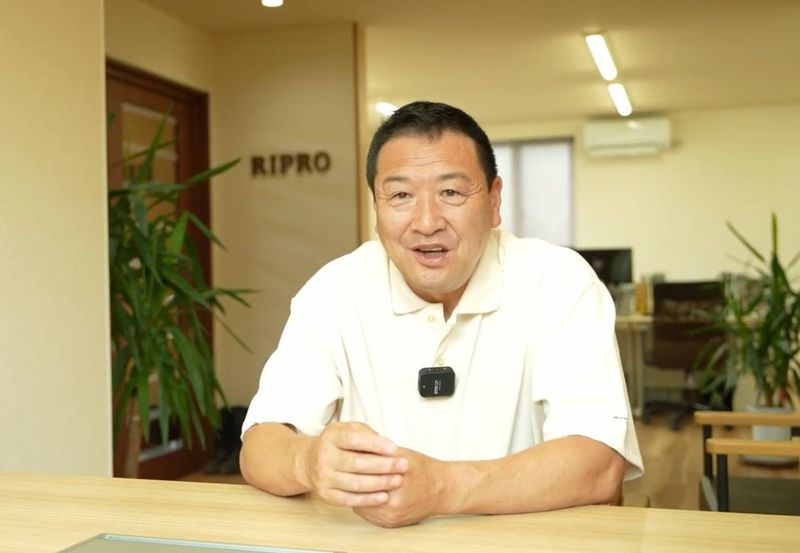

ラップもタイヤも鉄くずも。
分け方がわからなくても大丈夫です。
「捨てると公害 生かせば資源」
TEL 0153-79-5005 お見積り無料PROBLEM
片付けたいけど、どこに頼めばいいかわからない
ラップ、タイヤ、鉄くず…別々の業者に出すのは手間
牧場の仕事で手一杯。運ぶ余裕がない
高額だったら…と思うと踏み出せない
何をどう分ければいいか聞く相手もいない
知らない業者に頼んで大丈夫か心配
↓ RiPROがすべて解決します
MERIT

毎月決まった日に回収に来るから、廃棄物が溜まらない。敷地も作業スペースもスッキリした状態を保てます。

何をどう分ければいいか、回収スタッフが現場でご説明します。初めてでも安心してお任せください。

回収した廃プラは専用の機械で処理し、燃料や製品原料として再利用。捨てるのではなく、資源に戻します。
ONLY ONE
RiPROが集めた廃プラスチックは、別海町内のグリーンアース工場で
原料ペレットに再生されます。遠くへ運んで燃やすのではなく、
地元で資源に戻す。それがRiPROの仕組みです。
まずはお気軽にご相談ください
SERVICE
カードをタップすると詳細と注意事項をご覧いただけます。
※ 収集運搬費 1回 5,500円が別途かかります
段ボール・紙袋・ラップ芯・金属くず（1t未満）は無料回収！
回収のついでにお持ちします。溜めずにお出しください。
混ぜて出すと
132円/kg
分けて出すだけで
66円/kg
分け方がわからなくても大丈夫。回収スタッフが現場でご説明します。
一般廃棄物は各町の対応となります
注射器・針・点滴・薬品容器等
PRICE
ラップ2カゴ分（約120kg）
約13,400円/回
ラップ66円×120kg ＋ 収集運搬費5,500円
地域・農協によっては自己負担が大幅に軽減されます。詳しくはお問い合わせください。
OPTION
定期回収ご契約者様が対象です


何年分も溜まってしまった廃プラ、廃タイヤ、不用品。RiPROのスタッフがトラックと重機でまとめて搬出・処分します。クリーンアップ後は定期集荷できれいな状態をキープ。
¥3,300 /1時間・1人（機械代別途）
現地にてお見積り・ご提案いたします。
まずはお気軽にご相談ください
FLOW
お気軽にご連絡ください。廃棄物の種類や量をお伺いします。
スタッフが直接お伺いし、現地で品目・量を確認。料金をご案内します。
産業廃棄物処理委託契約書を締結。マニフェストを発行します。
毎月決まった日に回収。あとはお任せください。
PROCESS
回収した廃棄物は、地元でここまで処理します
🚛
回収
毎月定期的に
お伺いします
🔧
分別・圧縮
品目ごとに分けて
圧縮・減容化
♻️
ペレット化
グリーンアース工場で
原料ペレットに再生
🌱
再利用
道路資材・燃料として
再び活用
VOICE
「毎月来てくれるから、敷地に廃プラが溜まらなくなった。分別の仕方も教えてもらえるし、もっと早く頼めばよかった。」
— 上春別・酪農家（40代）
「クリーンアップで何年分もの廃棄物を一気に片付けてもらった。見違えるほどきれいになって、作業効率も上がった。」
— 別海町・酪農家（50代）
MOVIE
実際の集荷作業・再資源化の様子をご覧いただけます
ABOUT

MESSAGE
株式会社RiPRO代表の八木一洋です。別海町で25年以上にわたり、農業廃棄物の回収とリサイクルに取り組んでいます。
「捨てると公害、生かせば資源」——この信念のもと、回収した廃プラスチックを地元の工場で原料ペレットに再生する仕組みを作りました。農家さんの敷地をきれいに保ち、出たゴミを地域の中で資源に戻す。次の世代の酪農家にとっても、適正な廃棄物処理が当たり前である環境を作りたい。それが私たちの使命です。
| 会社名 | 株式会社RiPRO（リプロ） |
|---|---|
| 代表者 | 代表取締役 八木一洋 |
| 所在地 | 〒086-0216 野付郡別海町別海279番地1 |
| TEL / FAX | 0153-79-5005 / 0153-79-5006 |
| 事業内容 | 産業廃棄物の収集運搬・処分・再資源化 |
CONTACT
お見積り無料。まずはお気軽にご連絡ください。
TEL 0153-79-5005
FAX: 0153-79-5006